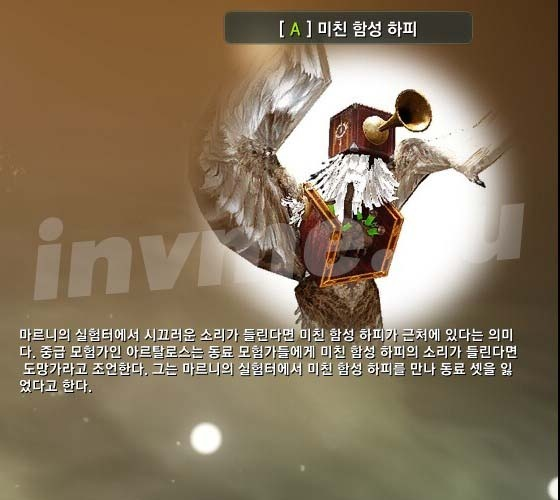
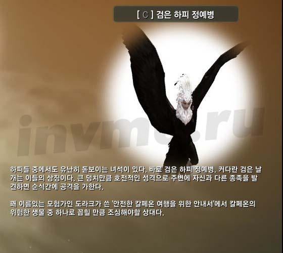
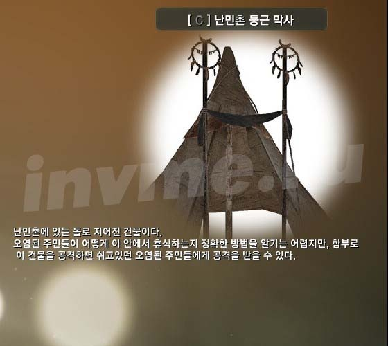

Todo o conhecimento no Deserto Negro. Ecologia Kalfeona
 Esta parte do guia para todo o conhecimento no Deserto Preto promete ser o maior. Nele, vou tentar trazer todo o conhecimento subseção Ecologia Kalfeona. Hyde transformou mais de 500 imagens, para que ele possa ter o tráfego. Publicado em toda esta terrível pressa, um dia antes do lançamento, mas a esperança ainda está em forma legível e com mapas claros.
Esta parte do guia para todo o conhecimento no Deserto Preto promete ser o maior. Nele, vou tentar trazer todo o conhecimento subseção Ecologia Kalfeona. Hyde transformou mais de 500 imagens, para que ele possa ter o tráfego. Publicado em toda esta terrível pressa, um dia antes do lançamento, mas a esperança ainda está em forma legível e com mapas claros.
Outros artigos da série:
A energia e conhecimento em Desert Preto (Guia de Introdução)

pessoas
- Moradores de Balenosa oriental
- moradores Serendii
- noivos urbanas
- Rangers marinas
- Moradores da Western Balenosa
- moradores Kalfeona
- moradores Keplana
- Moradores do sudoeste Kalfeona
- Moradores da mídia
- concessionários misteriosas
- nós de controle (do interior)
- nós de controle (North Ocean)

terreno

oceano

ecologia
- Ecologia leste Balenosa
- Ecologia Serendii
- Ecologia Kalfeona (Você está aqui)
- dos meios ambientais
- Peixes

Adventures
- Eastern Balenosa Jornal
Adventures in Velii
aventuras no antigo salão de
Aventura Elias Ilha
Adventures in Balenose I
- Jornal Serendii
Adventures in Serendii II
Adventures in Serendii III
Adventures in Serendii IV
Adventures in Serendii V
Adventures in Serendii I
- Jornal Kalfeona
aventuras no norte Kalfeona
Adventures in Keplan
Adventures no sudoeste Kalfeona
Adventures in Kalfeone I
Adventures in Kalfeone (coleta)
Kalfeon e Valquírias
Stories of Darkness
- da revista Meios Adventures na mídia I Adventure in the Media II Adventures na mídia III Acção na mídia IV Adventures na mídia V

ciência
- história I
- Histórico II
- Economia I
- política I
- cultura I
- teologia I
- Alchemy I
- I Clãs
- política II
- economia II
- cultura II
- cultura III
- teologia II
- Alchemy II
- mundo
Ecologia Kalfeona
Fauna Kalfeona (5 energia)
Escondendo aranha de pedra | aranha que esconde pedra em tocas. Eles são encontrados em uma pedreira ao norte de Keplana. 1-2 pedaços. |  | |
gárgula Changed | A maioria gárgula sem asas. Eles são encontrados na floresta no sul da aldeia de urso Vila . 1-2 pedaços. | ||
|  | Os ursos pardos. Eles são encontrados na floresta ao sul da cidade de Trento. 10-15 peças. | |
pedra aranha Spiny | Pequenas pedras explodindo ovos. Você pode encontrar uma carreira no norte da Keplana. 10-15 peças. |  | |
rato de pedra madura |  | ratos de pedra grandes, semelhante ao tatus. Eles são encontrados ao sul de Keplana. 3-7 pedaços. |  |
|  | cervos manchados. Eles são encontrados nas montanhas perto da aldeia de Florin. É fácil encontrar o som, eles estão constantemente gritando. 1-5 peças. |  |
| Eles são encontrados na floresta ao sul de Vila Urso . 1-2 pedaços. |  | |
|  | Jovens corças na floresta ao sul de Vila Urso . 1-2 pedaços. | |
|  | Cervos com chifres grandes. Eles são encontrados nas florestas ao sul de Vila Urso . |  |
|  | vermes jovens. Eles são encontrados em uma caverna gigante perto da aldeia de campo de trigo do Norte. 2-5 pedaços. | |
| vermes semelhantes criaturas com quatro pernas. Eles são encontrados em uma caverna gigante perto da aldeia de campo de trigo do Norte. 50-100 peças. |  | |
| Javalis nas plantações, a leste da aldeia de campo de trigo do Norte. 5-15 partes. |  | |
|  | Bandos de gafanhotos. Eles são encontrados em fazendas ao redor do campo de trigo do Norte aldeia. 5-10 partes. |  |
| Grandes moles. Eles são encontrados no sul-leste do campo de trigo do Norte aldeia. 15-25 peças. |  | |
|  | moles pequenas. Eles são encontrados no sul-leste do campo de trigo do Norte aldeia. 35-50 peças. |  |
|  | morcegos pequenos. Você pode encontrar a entrada para as cavernas, a maioria das localidades. Pessoalmente, eu Pharma na entrada da caverna Hiruto. 35-45 peças. |  |
rato do rock nova |  | ratos pequena pedra, semelhante a tatus. Eles são encontrados ao sul de Keplana. 5-10 partes. |  |
|  | As pequenas cabras da montanha. Eles são encontrados nas montanhas Kalfeona. 1-3 pedaços. |  |
|  | guaxinins marrom pequeno. Eles são encontrados em plantações ao redor do campo de trigo do Norte aldeia. Convenientemente Farm nas margens do rio ao sul do campo de trigo do Norte vila no portão Kalfeona, pois há nenhum outro mobs. 170-220 peças. |  |
| lagarto azul pequeno. Eles são encontrados no rio sul de Kalfeona. 10-17 peças. |  | |
| Bugs como gorgulhos. Eles são encontrados em todo o local. sul convenientemente fazenda de Kalfeona ou próximo Florin. 25-35 peças. |  | |
javali vermelho novo |  | Pequenos javalis vermelhas. Convenientemente fazenda na floresta ao oeste do lago Kaya. 200-250 peças. | |
| corações fixos, para sair do chão. Eles são encontrados em uma caverna gigante perto da aldeia de campo de trigo do Norte. 40-50 peças. Eu encontrei um total de 5 lugares desovar em toda a caverna, por isso é recomendado para remover as peles ou para tomar seu sangue. O olhar é assim . |  | |
|  | Mais spiny lagarto. Eles são encontrados no rio ao sul-oeste de Fort Trina fortaleza sitiada lagartos. 16-23 peças. |  |
|  | ratos pedra dizer. Eles são encontrados ao sul de Keplana. 18-25 peças. |  |
| Grande javali vermelho. Convenientemente Farm na floresta perto da aldeia de duendes, ao sul da cidade de Trento. 310-370 peças. |  | |
|  | Lagarto pequeno peludo branco. Eles são encontrados no rio ao sul-oeste de Fort Trina fortaleza sitiada lagartos. 1-2 pedaços. | |
|  | caranguejos de pedra pequenas. Pode ser encontrada perto de uma pedreira ao norte de Keplana. 15-20 peças. | |
|  | Insetos nas conchas. Pode ser encontrada na costa do lago no nordeste da Keplana. 1-2 pedaços. |  |
| raposas coloridas. Eles são encontrados na colina para o forte para o sul-leste de Kalfeona. 35-45 peças. |  | |
|  | raptors bípede. Convenientemente sudoeste Farm de Fort Trina fortaleza sitiada lagartos. 120-145 peças. | |
|  | gigantes hienas. Eles são encontrados na terra de gigantes na parte sul da localização, ao sul-leste de Keplana. 45-60 peças. |  |
Caverna Red Boar |  | Nora javali vermelho. Você pode encontrar na floresta ao sul-leste da cidade de Trento. 35-45 peças. |  |
| Os ursos pardos. Eles são encontrados na floresta perto da costa ocidental do lago Kaya. Convenientemente Farm perto de uma grande península na parte ocidental do lago. 30-40 peças. |  | |
|  | Lasky vivendo na floresta dos Ents, na parte sudoeste do local. 15-25 peças. |  |
longhair bisonte | búfalo Brown. Eles são encontrados na floresta Hiruto, nas montanhas do norte, a oeste dos ninhos da espécie. 10-15 peças. |  | |
| Explodindo ovos safados. Eles são encontrados em uma caverna gigante perto da aldeia de campo de trigo do Norte. 25-35 peças. |  | |
|  | Postura de ovos worms. Você pode reunir-se em uma caverna gigante perto da aldeia de campo de trigo do Norte. 17-25 peças. |  |
Amarelo-chick | Recém nascidos amarelo de nariz. Farm na encosta ao sul-leste de Kalfeona. 15-20 peças. |
Flora Kalfeona (2 poder)


Hiruto (2 poder)


Colina Quint (4 poder)
trolls bonde |  | Carrinhos com pedras. Fazenda perto de catapultas trolls. 15-20 peças. |  |
Troll-escudeiro | Trolley com cestas de pedras por trás. 1-3 pedaços. | ||
|  | Os antigos xamãs troll. 35-45 peças. |  |
|  | Trolls atirar pedras, pedregulhos com um saco em seu cinto. Convenientemente Farm norte das Fortificações de trolls , trolls acampamento sitiada. | |
|  | capacetes Guerra Trolls. liquidação Farm nas profundezas dos trolls da floresta em ou perto das catapultas trolls 25-35 peças. |  |
| trolls convencional. Eles são encontrados na floresta ao redor das fortificações de trolls , trolls acampamento sitiada. 1-2 pedaços. |  | |
|  | mobs pequeno com escudos e espadas. Você pode encontrar perto dos trolls catapultas. 15-25 peças. |  |
|  | Mobs com pedaços de placas de vedação no lugar. Você pode encontrar perto dos trolls catapultas. 15-25 peças. |  |
trolls bisonte jovens |  | trolls vaca peludo Young. Você pode encontrar na floresta ao norte dos Fortificações de trolls , trolls acampamento sitiada. 1-2 pedaços. | |
|  | Trolley pegar na parede da fortaleza trolls fortificações . 6-10 partes. |  |
Grandes trolls fogueira |  | Fogueiras de trolls no log com porcos de torrefação. 15-20 peças. |  |
trolls Catapult |  | Catapultas trolls como grande estilingue. 1-2 pedaços. |  |
|  | produtos de armazém carrinho. 15-20 peças. |  |
trolls Torre de proteção |  | Grandes torres vasculham totens, após a destruição de todos os trolls que estão congelados por um tempo. 25-45 peças. |  |
| Grande bonde cabine. Você pode encontrar em um assentamento no fundo dos trolls da floresta. 1-3 pedaços. |  | |
Protective Tower Dragon |  | Gigante Totem trolls com um grande crânio. Localizado na parte noroeste da terra do trolls, norte campos trolls petrificados. Para obter o conhecimento que você precisa para destruir o único. |  |
trolls barricada |  | Barricadas trolls. Farm ao oeste das fortificações dos trolls , trolls acampamento sitiados. 5-10 partes. |  |
Guerreiro Elite dos trolls antigos | trolls elite petrificada. Você pode encontrar a oeste do campo de troll. 5-20 partes. |  | |
|  | trolls vaca peludo. Eles são encontrados na floresta ao norte dos Fortificações de trolls , trolls acampamento sitiada. 4-9 pedaços. |  |
guerreiro Troll Elite |  | Elite armadura da guerra troll. acampamento convenientemente Farm, no norte-oeste das fortificações dos trolls , trolls acampamento sitiada. 35-45 peças. |  |
shaman trolls antiga |  | Os xamãs trolls petrificada. Ela pode ser encontrada em campos com trolls petrificados trolls oeste do acampamento. 30-35 peças. Esses mobs desovar apenas 2 lugares. Para que o conhecimento é conveniente para a fazenda em seu personagem de nível 46+, não agrilis trolls circundantes. |  |
Antiga trolls-chamas | Os trolls petrificados atiraram pedras. 1-2 pedaços. |  | |
guerreiro trolls antiga | A guerra trolls petrificada. Você pode encontrar a oeste do campo de troll. 20-25 peças. |  | |
|  | trolls petrificados convencional. 20-35 peças. |
Casa Marnie (2 poder)
|  | touros mecânicos. Eles são encontrados na montanha com um grande cave-arco, para o sul-leste de Kalfeona. 7-15 partes. |  |
orc experimental | Grandes mobs mecânicos que vêm fora seu braço. Você pode encontrar no labirinto na colina com um grande cave-arco, para o sul-leste de Kalfeona. 7-14 peças |  | |
|  | orcs pirotecnia atirando bolas de fogo. Eles são encontrados na montanha com um grande cave-arco, para o sul-leste de Kalfeona. 45-70 peças |  |
|  | gatos mecânicos. Eles são encontrados na montanha com um grande cave-arco, para o sul-leste de Kalfeona. 7-15 partes. |  |
|  | Cyborgs-lagartos. Convenientemente Farm para a construção de laboratório de Marnie, no final do labirinto da Montanha (5 peças reaparecer nas proximidades). Para obter o conhecimento que você precisa para matar 50-80 peças. |  |
|  | Caldeiras com carcaças penduradas em tripés. Você pode encontrar no laboratório Marnie quintal, localizada na montanha para o labirinto. 2-5 pedaços. | |
|  | Harpias Cyborg com um gramofone em vez de uma cabeça. 1-3 pedaços. |  |
|  | Robots frango controlada sentado no meio do robô (Robot Chicken?). 7-15 partes. |  |
Bomba cientista louco |  | barris de montanha que explodem no contato. 65-80 peças. |  |
Canhão cientista louco |  | Tambores com um líquido verde. Convenientemente perto da casa da fazenda no topo da montanha para o labirinto. 35-45 peças. |  |
Clã Sonil (3 energia)
oficial Sonil |  | lagarto Grande Rarny com reaparecimento muito tempo, cerca de 6-8 horas. Parece tanto na parte ocidental do acampamento Sonil ou na parte sudoeste de trincas Fort, ou nas margens do rio. Aqui mais imagens de Sergo . É fácil de bater até 50% de saúde. A 50% da saúde começa a doer salto em seu propósito, por o salto não se esqueça de se esquivar. |  |
Rider Sonil |  | Cavaleiros a cavalo nos Raptors. Convenientemente Farm ao longo da parede sul dos lagartos fortaleza sitiada. 11 assentos desovar. 1 no canto sudoeste do muro, 7, no sul-leste e 3 sob uma montanha no lado sul-leste da estrada. Matar precisa 20-40 peças. |  |
|  | capacete lagartos Sonil com uma espada na mão. 5-10 partes. |  |
|  | Lagartos arqueiros. 5-10 partes. |  |
|  | Pequenos lagartos Sonil com uma espada e sem capacete. 45-55 peças. |  |
Todos Sonil |  | lagartos desarmados trabalhadores fugir para baixo HP. 55-65 peças. |  |
Siege Tower Sonil | torres de cerco sobre rodas, puxadas por raptor. 10-20 peças. |  | |
| Móvel Catapult Sonil |  | Pequenos lagartos catapulta móveis. 5-10 partes. |  |
Catapult Sonil |  | Grande catapulta estacionária. 1-5 peças. |  |
|  | Grandes lagartos com grandes clubes perfurantes e duas espadas para trás. 25-35 peças. |  |
Sonil Elder | xamãs lagartos com equipes. 90-110 pedaços. |  | |
guerreiro feroz Sonil |  | lagartos Guerra pesado. Com grande crânio martelos. 3-7 pedaços. |  |
Sonil privada | lagartos grossas trabalhadores desarmados. 80-100 pedaços. |
Floresta Manche (2 poder)


Ratam (2 poder)
Todo o conhecimento sobre Ratamh pode entrar em seu acampamento ou na floresta ao seu redor, de modo a poupar espaço, adicione um mapa geral. O acampamento está localizado no sul do lago Kaya.


Lake Kaya (2 poder)
Todo o conhecimento neste grupo como Farm em um só lugar, no lago Kaya. O cartão será total, com acampar na água, onde obteve uma grande parte do conhecimento.

|  | Água grande espessura. 5-10 partes. |
|  | Otter com grandes cestas redondas de peixes atrás dele. Convenientemente Farm na costa sul-ocidental do lago Kaya, uma grande água acampamento. 160-190 peças. |
| água de pequeno porte com cestas de peixes atrás dele. 2-7 pedaços. | |
|  | água convencional com lanças e escudos sem. 30-45 peças. |
pescador de água Elite | Grande água com cestas de peixe. Eles diferem apenas no tamanho pequeno. 100-175 peças. | |
|  | água pequeno com arpões e escudos. 2-7 pedaços. |
| Fogueiras de água para o peixe assar. Fazenda no meio do lago Kaya nas ilhas. Um incêndio em cada ilha ou água em um grande acampamento no lago de bétula ocidental. 3-10 peças | |
|  | Estandes com peixe seco. 3-12 partes. |
|  | Água em capas com picos em suas costas. 50-70 peças. |
|  | Striders da água Kaya lago. Morto da arma treinamento, e apenas aqueles que estão em movimento (com o nome e xn sobre sua cabeça). A arma pode ser alugado no lontra no assentamento de um par de casas a leste de North Port Kaya , acampamento na costa oriental do lago. Conveniente filmar flutuando sobre os barcos para o lago. |
|  | Kaya Jellyfish Lake. Matou Trenirovochnog de armas de fogo e somente aqueles que estão em movimento (com o nome e xn sobre sua cabeça). A arma pode ser alugado no lontra no assentamento de um par de casas a leste de North Port Kaya , acampamento na costa oriental do lago. Basta saber que você pode ser pego água-viva no mar em uma vara de pesca. |
Cemitério Hex (2 poder)
|  | Árvores com casca descascados e pentagramas nos troncos. Farm na parte oriental do cemitério gigante, localizado na parte sudeste do local. 20-30 peças. |  |
| Os lobos são mortos-vivos. casa de fazenda perto de Becker , um alquimista no vermelho, na parte norte da floresta, com os mortos-vivos, que está localizado perto do cemitério gigante na parte sudeste do local. 18-25 peças. | ||
|  | Esqueletos de guerra, capaz de bloquear. Eles são encontrados em torno Cemitérios Hexi na parte sudeste do local. 25-35 peças. |  |
Esqueleto-arqueiro |  | Skeleton Archers. Eles são encontrados em torno Cemitérios Hexi na parte sudeste do local. 10-20 peças. |  |
|  | Convencional esqueletos Farm todo Cemitérios Hexi, localizado na parte sudeste do local. 3-10 partes. |  |
|  | Totens e madeira com crânios, esqueletos chamando. 30-40 peças. |  |
Mormut esqueleto | Esqueletos com presas e foices em suas mãos. 20-30 peças. |  | |
Sonil esqueleto |  | Os esqueletos de dinossauros com cimitarras. 100-140 peças. |  |
ratam esqueleto | Grandes esqueletos. Farm, na parte sul do cemitério Hex. 2-7 pedaços. |  |
Reserve (2 poder)
Ruínas circulares árvore |  | grande redondo como uma moeda pedaços das ruínas na árvore. Você pode encontrar Brie na floresta protegida, localizado nas montanhas ao norte do campo de trigo do Norte aldeia. 1-4 pedaços. |  |
| Grandes aranhas de pedra. Você pode encontrar Brie na floresta protegida, localizado nas montanhas ao norte do campo de trigo do Norte aldeia. 2-5 pedaços. | ||
|  | assistentes Humanshi possuídas por espíritos. Farm na parte norte da floresta protegida Brie. 5-10 partes. | |
gigante obsessed |  | Giants possuídas por espíritos. Ele pode ser encontrado na parte norte das ruínas ou em uma caverna parte norte-oriental. 2-7 pedaços. | |
|  | Humala possuído por espíritos. Convenientemente fazenda em uma caverna na parte nordeste das ruínas ou na parte norte das ruínas. 30-50 peças. |  |
Errante espírito preto |  | Parece que uma nuvem negra. Na verdade ele está explodindo mobs, que só podem matar quando eles estão tentando explodir em você. Antes disso, eles não são direcionados, e apenas voar ao redor. Convenientemente Farm na parte escura da caverna com robôs, onde não há nenhuma outra mobs na parte norte das ruínas. Desde as cavernas nas madeiras muito, fez um pequeno vídeo , para encontrar a caverna direita. 2-5 pedaços. |  |
Ruínas de árvores triangulares | A construção das três árvores com uma pedra em cima. 1-2 pedaços. |  | |
Aranha pequena Ruin |  | aranhas pequena pedra. Você pode encontrar Brie na floresta protegida, localizado nas montanhas ao norte do campo de trigo do Norte aldeia. 25-35 peças. |  |
|  | árvores altas individuais com T peça em cima das ruínas. 2-10 partes. |  |
árvore grande |  | As grandes peças cilíndricas das ruínas dos ramos. Apenas cerca de 8 lugares e desovar. 4 na parte inferior das ruínas (na floresta), e 4 no topo, perto do humanóide explorar as ruínas. Para obter o conhecimento que você precisa para quebrar os 50-80 peças. |  |
árvore pequena |  | peças cilíndricas pequenas das ruínas dos ramos. 15-30 peças. |  |
|  | Árvores com uma cabeça gigantesca estátua nos ramos. 2-8 pedaços. |  |
|  | porta de pedra. Ela pode ser encontrada nas cavernas da floresta para as ruínas. Para obter o conhecimento que você precisa para quebrar cerca de 5-15 peças. |  |
|  | Semelhante a outros golems humanóides com dois braços e pernas. 5-10 partes. |  |
| Obcecado com cervos |  | Preto cervos manchados. Eles vivem em florestas protegidas Brie está localizado nas montanhas ao norte do campo de trigo do Norte aldeia. 2-5 pedaços. |  |
Defender de ruínas antigas |  | Grandes guardas robô. Você pode encontrar no final de uma longa caverna com robôs. A entrada da caverna está localizada na parte ocidental das ruínas. 1-3 piadas. | |
Guardião das ruínas antigas |  | guardas robô pouco. Você pode encontrar uma longa caverna sob a montanha. A entrada da caverna está localizada na parte ocidental das ruínas. 5-20 partes. |  |
Velmorna Order (3 energia)
Kzarki mão |  | Uma grande mão demoníaca. Ele pode ser encontrado na parte norte das catacumbas, localizado a oeste de Forest Ents. A entrada para as catacumbas desejados localizados perto de um pequeno lago. 1-2 pedaços. Para facilitar a pesquisa levou um vídeo curto . |  |
| Coluna santuário Kzarki | colunas de pedra, pilares nas catacumbas na parte ocidental da floresta dos Ents. 10-15 peças. |  | |
Falha ressurreição Kzarki | espíritos escuros pequenos como o seu uma nuvem. Ele pode ser encontrado nas catacumbas, localizado a oeste de Forest Ents. Na mecânica eles kamekadze. Fly círculos e não alvo não é aggro em você. Sagrivshit, eles apenas explodir, causando-lhe danos. Precisamos ter tempo para matá-los para essa fração de segundo antes de voar para você. De acordo com minhas medidas suficientes ~ 90 parâmetro de danos com as coisas para ter tempo para matá-los em vôo. Para maior clareza, eu levei um pequeno vídeo . |  | |
Alta Sacerdotisa da Ordem das Sombras |  | Sacerdotisa que lutar com os punhos. Pode ser encontrado em uma caverna em um monastério abandonado . A entrada da caverna é através de um poço ou da floresta dos Ents. 15-25 peças. |  |
| Caindo das estalactites no teto. Pode ser encontrado em uma caverna em um monastério abandonado . 2-3 pedaços. |  | |
| tentáculos negros saindo da terra. Ele pode ser encontrado nas catacumbas e cavernas na parte ocidental da floresta dos Ents. 2-5 pedaços. |  | |
santuário Guerreiro Kzarki |  | Guerra com escudos. Ela pode ser encontrada em um templo nas montanhas a oeste do mosteiro abandonado. 1-5 peças. |  |
Capitão da Order of Shadows |  | Dark Knights com espadas largas. Pode ser encontrado em uma caverna em um monastério abandonado . 60-80 peças. |  |
Elite santuário Magician Kzarki |  | magos de elite com pessoal. Ele pode ser encontrado nas catacumbas da floresta para o oeste dos Ents. 55-70 peças. |  |
Elite santuário Guerreiro Kzarki | Guerra Elite. Ele pode ser encontrado nas catacumbas da floresta para o oeste dos Ents. 10-20 peças. | ||
santuário Sacerdotisa Kzarki |  | Sacerdotisa com duas facas. Você pode encontrar nas ruínas nas montanhas a oeste dos Ents da floresta, para o norte-oeste da cidade de Trento. 100-130 peças. |  |
Ordem Guardião Sombra | mobs elite com escudos, que podem ser encontradas nas catacumbas sob um monastério abandonado . No total, cerca de localizações 5 de desova, mas desde que há sempre um monte de gente, o conhecimento é muito difícil de preencher. Toda a energia do conjunto de dar mesmo que não leva. |  | |
|  | Assistentes com equipes. Há nas catacumbas sob um monastério abandonado . 1-2 pedaços. |  |
Cavaleiro da Ordem das Sombras | Levitando cavaleiros escuros. Você pode encontrar a entrada para as catacumbas sob um monastério abandonado se passar bem. 25-35 peças. | ||
rebelde Kalfeona |  | Manifestantes pessoas em uma máscara e com um pedaço de pau na mão. Ele pode ser encontrado na parte ocidental da Kalfeona em motins trimestre. 1-2 pedaços. |  |
|  | Manifestantes espadas gigantes. Ele pode ser encontrado na parte ocidental da Kalfeona em motins trimestre. 1-2 pedaços. |  |
|  | Protesto uma mulher com um lenço no rosto. Ele pode ser encontrado na parte ocidental da Kalfeona em motins trimestre. 1-2 pedaços. |  |
| manifestante Hooman usando uma máscara e com duas espadas. Ele pode ser encontrado na parte ocidental da Kalfeona em motins trimestre. 1-2 pedaços. |  | |
Farmer-rebelde |  | Manifestante com um forcado. Ele pode ser encontrado na parte ocidental da Kalfeona em motins trimestre. 1-2 pedaços. |
Harpias (2 poder)
Harpy Nest |  | Árvores com as ranhuras no topo das harpias. São harpias nidificação em uma montanha na parte noroeste do local. 60-80 peças. |  |
| harpia jovem |  | Chicks harpias. Eles são encontrados em um grande ninho no topo do cume. 25-35 peças. |  |
|  | harpia convencional. 10-20 peças. |  |
| harpia preto |  | harpia preto. São encontrados entre ninhos harpias nas montanhas ao norte do Castelo dos Cavaleiros Delpe depositados harpias. 15-25 peças. | |
Ladrão Harpy |  | Harpias estão tentando realizar os guardas. Ela pode ser encontrada no Castelo dos Cavaleiros Delpe , fortaleza harpias sitiada. 10-20 peças. | |
|  | xamãs Harpy atirando lama negra. 3-12 partes. |  |
|  | capacetes Harpia. Ela pode ser encontrada no Castelo dos Cavaleiros Delpe , uma fortaleza sitiada ou harpias harpias aninham na montanha. 20-35 peças. |  |
Giants (2 poder)


Criaturas Kalfeona (3 energia)
| raízes da fada do jardim |  | Mais de 901 pontos de amizade entre Lozio , lontras no assentamento de duas casas, localizada a leste do lago Kaya. | |
ruínas do monstro | Monstros lama. Eles são encontrados na fazenda em ruínas na floresta a leste de Kalfeona. 1-5 peças. |  | |
|  | Ravens. Convenientemente Farm na montanha perto do ninho de harpias. Durante a confusão importante ter tempo para atingi-los antes que eles voar para longe. 15-35 peças. |  |
verme caverna | Móvel, como se o worm sobre se um cogumelo, ficando fora da água. É encontrado em uma piscina, lago, dentro da grande gruta-caverna, localizada na montanha ao norte-oeste de Keplana . 1-2 pedaços. |  | |
gluton faceless |  | Grande quatro glutony. Pode ser encontrada dentro da grande gruta-caverna, localizada na montanha ao norte-oeste de Keplana . 1-2 pedaços. |  |
gluton jovem |  | Pequeno glutony fugir como morcegos. Pode ser encontrada dentro da grande gruta-caverna, localizada na montanha ao norte-oeste de Keplana . 10-25 peças. |  |
gluton mutante |  | O glutony de duas pernas grande com cabeças assemelhando-se as baleias focinho. Pode ser encontrada dentro da grande gruta-caverna, localizada na montanha ao norte-oeste de Keplana . 5-15 partes. | |
gluton Médio |  | Médias de quatro glutony. Pode ser encontrada dentro da grande gruta-caverna, localizada na montanha ao norte-oeste de Keplana . 50-110. |  |
kamnekraba Egg | Postura de ovos caranguejos de pedra. Ela pode ser encontrada no topo da colina, localizado atrás da bifurcação na estrada para o norte-leste de Keplana . 35-50 peças. |  | |
kamnekrab jovem |  | Stone caranguejos pequenos, disfarçado com um monte de terra rara da grama verde. Ele pode ser encontrado em uma colina ao norte-leste de Keplana . 20-35 peças. |  |
kamnekrab fraco |  | Grandes caranguejos de pedra, máscara sob uma rocha. Pode ser encontrada em terreno montanhoso nas colinas ao nordeste de Keplana . 10-25 peças. |  |
ninfa de madeira antiga |  | Mais de 701 pontos de amizade entre os trolls manchado , Vendedor Trent funcionários da cidade. Aqui , em um comentário sobre dAVIN4I , você pode assistir o vídeo no prolezaniyu uma caverna fechada com esses mobs. |  |
ninfa de madeira adulta |  | Mais de 1000 pontos de amizade entre o Indri , uma ferramentas vendedora Urso Aldeia . Aqui , em um comentário sobre dAVIN4I , você pode assistir o vídeo no prolezaniyu uma caverna fechada com esses mobs. |  |
ninfa de madeira pequena |  | Mais de 801 pontos de amizade em Mayer , vendedor orc de móveis na cidade de Trento. Aqui , em um comentário sobre dAVIN4I , você pode assistir o vídeo no prolezaniyu uma caverna fechada com esses mobs. |  |
kamnekrab rara |  | Caranguejos disfarçado como uma rocha. Você pode encontrar o norte-leste do campo de trigo do Norte vila na entrada de uma enorme caverna com vermes. 1-3 piadas. |  |
kamnekrab irritado |  | Pequeno siri disfarçado como uma roseira. Eles são encontrados nas colinas ao nordeste de Keplana . 1-7 pedaços. |  |
kremnekrab Adulto |  | Grandes caranguejos de pedra, disfarçado como um grande arbusto verde. Eles são encontrados no topo de uma colina com um monte de caranguejos de pedra, situado ao nordeste de Keplana . 4-10 partes. |  |
Uma gárgula do bebê | gárgulas jovens. Eles são encontrados na floresta ao sul de Vila Urso . |  |
Mine (2 poder)
digger petrificado | Completamente congelado em gigantes de pedra. Você pode encontrar nas minas na Serra, no extremo norte de Keplana . 2-6 pedaços. |  | |
mineiro petrificado |  | Os mineiros petrificado com os braços. Eles são encontrados nas minas e as minas ao redor Keplana . 20-35 peças. |  |
mineiro petrificado |  | Quase mineiros completamente endurecido. Eles são encontrados nas minas e as minas ao redor Keplana . 3-10 partes. |  |
aranha de pedra |  | aranhas de pedra. Eles são encontrados em torno da pedreira, localizada ao norte de Keplana . 10-25 peças. |  |
trabalho petrificado |  | gigantes mineiros Poluokamenevshie com um martelo na mão. Você pode encontrar nas minas perto da escala de montanha no extremo norte da Keplana . 1-2 pedaços. | |
|  | Aranhas, golems, recolhidos a partir dos escombros. Eles são encontrados em um grande norte pedreira abandonada de Keplana . 15-30 peças. |  |
Petrificado mineiro louco |  | Grandes, gigantes completamente petrificados com um martelo. Eles estão localizados ao redor de um pequeno buraco ao leste de uma grande mineradora fossilizado , gestão site de compras em pedreiras. |  |
capataz petrificado |  | gigantes mineiros Poluokamenevshie com um tridente na mão. Você pode encontrar nas minas perto da escala de montanha no extremo norte da Keplana . 30-50 peças. |  |
|  | Os ninhos de aranhas, como montes de pedras e detritos. Você pode encontrar uma grande norte pedreira de Keplana . 10-20 peças. |  |
gnome petrificado |  | Poluokamenevshie anões mineiros em capacetes com chifres. Você pode encontrar nas minas perto da escala de montanha no extremo norte da Keplana . 5-15 partes. |  |
sapadores petrificado |  | demolição anões, com uma vela na cabeça, pegando dinamite. Você pode encontrar nas minas perto da escala de montanha no extremo norte da Keplana . 20-35 peças. |  |
Catapult Keplan |  | (Quem precisa de palavras terminam em nosso tempo) monta-cargas para carga. Você pode encontrar no interior da mina, localizada sob a saliência do extremo norte Keplana . 2-5 pedaços. |  |
| Gigantes serras circulares estacionárias conseguiu anão. Você pode encontrar nas minas perto da escala de montanha no extremo norte da Keplana . 10-20 peças. |  | |
| Golems coletados de rochas e detritos. Você pode encontrar uma grande norte pedreira de Keplana . 15-25 peças. |  | |
mineiro petrificado |  | gigantes Poluokamenevshie mineiros com picaretas em suas mãos. Eles são encontrados nas minas localizadas sob a saliência do extremo norte Keplana . 4-15 partes. |  |
Refugee Village (2 poder)
gnome infectados |  | Pacientes anões como um zumbi. Eles são encontrados em torno das favelas para o norte-oeste de Kalfeona. 40-60 peças. |  |
A mulher infectada | As mulheres infectadas com capuz. Ela pode ser encontrada nas favelas para o norte-oeste de Kalfeona. 10-20 peças. |  | |
O homem infectado |  | homens infectados em capuzes. Ela pode ser encontrada nas favelas para o norte-oeste de Kalfeona. 70-100 pedaços. |  |
açougueiro infected |  | Infectado açougueiros gigantes, como um zumbi. Ele pode ser encontrado em torno das favelas para o norte-oeste de Kalfeona. 50-70 peças. |  |
Um cão infectado |  | cães infectados malhadas. Eles são encontrados na mata norte de Kalfeona. 20-35 peças. |  |
gigante infected | gigante infectado com um clube na mão, sentado no chão. Ela pode ser encontrada nas favelas para o norte-oeste de Kalfeona. 10-25 peças. |  | |
cabras crânio Montanha | Pilhas de crânios com um grande crânio de cabra no topo. Você pode encontrar ao redor da fazenda com a vaca infectada, nordeste da Kalfeona. 30-45 peças. |  | |
refugiados Hut |  | A tenda é sob a forma de uma pirâmide. Você pode encontrar no acampamento dos pobres para o norte-oeste de Kalfeona. Para que o conhecimento é suficiente para destruir o único. |  |
refugiados Shalash |  | barracas tenda-like. Você pode encontrar no acampamento dos pobres para o norte-oeste de Kalfeona. Para que o conhecimento é suficiente para destruir o único. |  |
refugiados de jarro |  | Latente jarros na postes elevados. Ela pode ser encontrada nas favelas para o norte-oeste de Kalfeona. 65-95 peças. Você também pode entrar em contato com o informante em um campo de refugiados, completando uma cadeia de busca "Treasure Hunter" em Kalfeone. Para esta informação graças ARSolog . |  |
| campos de refugiados Talisman |  | Big Totem. Ela pode ser encontrada nas favelas para o norte-oeste de Kalfeona. 20-35 peças. | |
cão preto infectados |  | cães negros infectados. Eles são encontrados na mata norte de Kalfeona. 1-7 pedaços. |  |
bruxa infectado |  | Bruxa em chapéus pontudos. Ela pode ser encontrada nas favelas para o norte-oeste de Kalfeona. 17-35 peças. |  |
mágico infected | doutor do praga, mascarado com seus bicos. Ela pode ser encontrada nas favelas para o norte-oeste de Kalfeona. 7-20 partes. |  |
Sendo norte Kalfeona (2 poder)


{kind=link}
{kind=link}
{kind=link}
{kind=link}
{kind=link}
{kind=link}
{kind=link}
{kind=link}
{kind=link}
{kind=link}
{kind=link}
{kind=link}
{kind=link}
{kind=link}
{kind=link}
{kind=link}
{kind=link}
{kind=link}
{kind=link}
{kind=link}
{kind=link}
{kind=link}
{kind=link}
{kind=link}
{kind=link}
{kind=link}
{kind=link}
{kind=link}
{kind=link}
{kind=link}
{kind=link}
{kind=link}
{kind=link}
{kind=link}
{kind=link}
{kind=link}
{kind=link}
{kind=link}
{kind=link}
{kind=link}
{kind=link}
{kind=link}
{kind=link}
{kind=link}
{kind=link}
{kind=link}
{kind=link}
{kind=link}
{kind=link}
{kind=link}
{kind=link}
{kind=link}
{kind=link}
{kind=link}
{kind=link}
{kind=link}
{kind=link}
{kind=link}
{kind=link}
{kind=link}
{kind=link}
{kind=link}
{kind=link}
{kind=link}
{kind=link}
{kind=link}
{kind=link}
{kind=link}
{kind=link}
{kind=link}
{kind=link}
{kind=link}
{kind=link}
{kind=link}
{kind=link}
{kind=link}
{kind=link}
{kind=link}
{kind=link}
{kind=link}
{kind=link}
{kind=link}
{kind=link}
{kind=link}
{kind=link}
{kind=link}
{kind=link}
{kind=link}
{kind=link}
{kind=link}
{kind=link}
{kind=link}
{kind=link}
{kind=link}
{kind=link}
{kind=link}
{kind=link}
{kind=link}
{kind=link}
{kind=link}
{kind=link}
{kind=link}
{kind=link}
{kind=link}
{kind=link}
{kind=link}
{kind=link}
{kind=link}
{kind=link}
{kind=link}
Como sempre, eu gostaria de receber quaisquer adições, atualizações, comentários e repassar seus amigos ou redes sociais.
Quem inventou para fazer uma captura de tela com um mini-mapa. Fazer uma grande, deixar claro. E com estas imagens de seus 40 minutos só sei o quê e onde.
Este é um grande screenshots mapa, e não com o mini-mapa. No mini mapa não são unidades marcados e NPC. Infelizmente, eles são especificamente reduzida, como na guia de cerca de 250 conhecimento. A captura de tela cheia, mesmo jpeg-e pesa cerca de 0,5 metros. Se cada conhecimento para adicionar mapa de grande escala você tem apenas cerca de 125 placa MBT vai pesar, o que significa que as pessoas com a Internet <10 MBT / s vai esperar por 15-20 segundos até que apenas fazer download de mapas. para não mencionar aqueles que têm o tráfego de internet móvel. E porque há imagens do próprio conhecimento + texto, muito infelizmente, pesa.
Em todos os mapas, sempre que possível, tentei pegar algum objeto significativo: cidade, montanha, grande nó e assim por diante, para deixar claro exatamente onde meu personagem quando krinshota. E além de tudo isso somado descrição de texto, para aqueles que têm imagens com deficiência (mais uma vez, por causa do tráfego, por exemplo), ou que não pode encontrá-lo no mapa. Se qualquer conhecimento absolutamente incompreensível descritos e filmado, escrever, tentar substituir o mapa ea descrição de forma mais detalhada.
PS Onde é possível ou é indispensável, por exemplo, na pequena Hyde com o conhecimento mais complexo, vou deixar um full-length imagens visuais.
Francamente na py servidor completamente diferente de este mapa (possivelmente dependente de configurações de imagem).
Apenas lidar com este mapa (http://invme.ru/uploads/images/00/00/01/2015/10/03/656cb1.jpg) onde está o NPC apropriado era simplesmente irrealista. Estes marcaria localizado perto de um nó (que seria muito mais fácil de entender)
Há apenas uma enorme floresta com esqueletos. E duzentos metros em torno do lugar marcado no mapa Farm mobs desejado. Normalmente, eles nem sequer precisa de olhar, como eles são ~ 50 nível. Basta correr em círculos e eles virão. O PS repente, uma hora depois, eu entendi que você quer dizer :). Sim, é um mapa do mundo, mas a vista do topo, como a vista isométrica (que é o padrão) nem sempre exibe corretamente a localização do personagem.
Thx para a base, 2 cultura entendi como um rascunho? O único conhecimento que permanece no círculo deste Piper Kalfeona, ter pensamentos onde ele está?
De nada. É bom que você veio a calhar.
Cultura II está pronto, amanhã de manhã eu vai colocar para fora.
Aqui .
Existe alguma outra forma de obter o conhecimento de ninfa de ervas, fogo ninfa, ninfa Terra. uma vez que estão presentes no mapa. ou gamenet nakasyachila? com a localização da caverna?
Eles existem, eles podem ser ouvidos mesmo que você vá para a caverna na aldeia de Cryo, mas a entrada está fechada. Na Coréia vários dias eu tentei encontrar outra entrada (o segundo a ser nas montanhas), mas também inundado. Assim, para-se multidões, aparentemente, não foi ainda alcançada.
é só kapets Shortcuts como encontrá-los (conhecimento prikrepesh?). http://www.inven.co.kr/board/powerbbs.php?come_idx=3584&l=18216
e aqui está um vídeo como Zabrat http://www.youtube.com/watch?v=LGs9YO0iFks
Clipe útil obrigado. Mas oficialmente a caverna é fechada, tanto quanto eu sei, e, portanto, um tal prolezaniya texturas podem enfrentar proibição.
* Sussurro * mas eu, pessoalmente, tentar slazit alguma forma :)
Em um artigo para adicionar o seu comentário.
Eu adicionaria. este é o caso quando você está no corte e salte para baixo (de bruços, poleiro), o número sobe acentuadamente e atira-te para uma textura no qual você pode andar. Virei-me e encontrando-se (deve haver um determinado ângulo da câmera) posição, e sentar-se para voar na textura. Para sair da necessidade de textura para maximizar o tapete para o mandril (mas você está novamente preso na textura apenas porygayte e escolha), mas os mobs muito sucesso e nem sempre funciona (de acordo com a minha observação há mob Cator atinge de longe, e graças a ele eu vyberaem) lendo coreana forum eu aprendi que há uma segunda passagem em algum lugar nas montanhas. E por último a dizer que a Coreia bater no gazebo 4-7ch e depois dar o conhecimento (ou eu não pravelno traduzido)
Depois de várias tentativas de perturbar-me e eu foi expulso da textura para o fundo da pedra
infelizmente, não filmado.
sucesso))
Tentei entrar na caverna. Uma vez que não está caindo - e deitado e sentado. Você pode colocar o vídeo com uma explicação precisa, ou apenas explicar como você começou neste caverna.
aqui com comentários e explicações.
Pessoal, eu lhe trazer boas notícias sobre as Dríades. Caverna alteradas com a introdução de mídia da. salto push (inlay 2 pedra 2 lvl nos sapatos bom dia + 2 roupas Tallis + sapatos donatskie, bem, ou substituir alguma coisa com isso em alhimku ou alimento) pula em uma pedra à esquerda, arrastou sob o rastejamento da rocha inclinada, relogaetes, você saltar para a textura topo . Correndo pelo teto muito à frente, há nichinayutsya "quartos" internas das Dríades, túneis luz amarela encharcado mais apertados, há lugares onde o "muro" em que você executa estreitou para o chão e que não seja rastejando sob eles não subir, isso é o mesmo esquema fluência e relogaetes, depois do sol você poltela vai ficar fora da sala, de onde você pode disparar e você vai bater, que está saltando em todas as direções, como um louco você, mais cedo ou mais tarde, empurrado para dentro da própria caverna e pode correr livremente através dele matando todos os móveis de jardim, incluindo. Existem vários veios de pedras arrastar prata, vermelho e azul. Se necessário, ou muitos não será impossível fazer screenshots ou mb vídeo, mesmo se a cadeia de cima. E, em geral, não foi difícil de fazer. Todo o melhor de sorte. Fechei secção essencialmente Kalfeona.
então vamos vidosik. por isso vai ser mais fácil))) eu vou postar mais sobre a Coreia do Velho)) e não inclui um botão zabut rebentozinho é mais fácil de compreender que a imprensa))
sim todos pustatu rabotaet.v não ludshe ir ... (por uma questão de interesse marcada). bem feito)) para a Coréia por causa da informação e não têm)))
O vídeo pode gash? Fácil apenas saltar, e é aí que xs diante, várias vezes caiu no vazio e tivemos de esperar para a reversão da salvação
Substitui a segunda parte da mídia youtu.be/gTuc1Z9MLXs
5 minutos e você está feito. Farm primeiro mandril
A telas de vídeo ou mesmo possível? Não consigo encontrar a sala amarela e espaço no chão, para o qual você precisa rastejar.
Ok pessoal, SOCA mesmo ser lavado para baixo nos próximos dias como pobres. Quanto à Coreia, não tenho certeza quando entrar nesta caverna Valencia vai olhar como em meios de. :-)
Aqui é o caminho real para entrar na caverna na 2.14.16
Alguém sabe de uma caverna que algo mudou nos últimos anos (a partir da data de vídeos extremos de xManiac)? Eu não pode saltar sobre a pedra, a vida de mim! Equipado com tudo o necessário, como mencionado acima, mas o personagem não pode agarrar-se a rocha. E saltar sobe quase até a habitação andar acima da borda do penhasco. Não se apegue a e é isso. Tentei saltar a partir de ângulos diferentes, em diferentes direções, passou todas as poções asas abastecido e Ai, ai ... Alguém pode aconselhar alguma coisa?
Eu gostaria de saber como obter o conhecimento da "ressurreição Falha Kzarki" de ramos Ordem Velmorna porque descreve como obter mais conhecimento da "Mão Kzarki"
PS Eu entendo a ressurreição lamentável é balões escuros que voam nas catacumbas que riem como uma nuvem, mas não matá-los, quer tomar no alvo eu não recebi
Infelizmente eu estava na versão russa ainda não chegou a esse conhecimento. Há lado, há um tentáculo nuvens. Tuchkov mais vil, eles são difíceis de preencher o conhecimento. Mas desde que a versão russa, algumas coisas não são o lugar onde você deve ser, eu poderia facilmente fazer uma bagunça com a ordem. Vou tentar o duplo controlo e melhorar no futuro próximo.
Se ele ainda está no Tuchkov, é preciso vencê-los, bem como as nuvens no Brie floresta protegida, mas desta vez você vai precisar de um muito alto DPS, para não dar-lhes a explodir.
Resta entender como vencer essas habilidades nuvens AOE porque eles não afetam alvo e eles também não pode tomar
Assista ao vídeo e descrição da Reserva conhecimento / espírito Preto Wandering no mesmo artigo. Lá eu bater nuvens loulevelnye. Em mecânica, elas são semelhantes. Torne-se perto das nuvens, e vencê-la com algo mais forte, até que ela pensa em você voar.
Eu não mato. Ele veio para Zarqa. Eu encontrei um lugar onde eles voam. Levantou-se. Tuchkov moscas e batendo no corpo. No momento do impacto, ele cai no chão e vê-la HP (se você tomar alguns jornais on kzarok, neste momento, mesmo quadrado azul busca mob aparece acima dela). No piso ela está mentindo menos de um segundo, você tem que pegá-lo svanshotit. Após heap Feil (místico) com tiras vermelhidão HP nuvem colocar pedras na ilha de Creta, comida zahaval eo frasco no crit. Explosão 1 vezes.
Aqui está um link para um guia coreano
www.inven.co.kr/board/powerbbs.php?come_idx=3584&l=8691
Posso descrever brevemente o processo, ele foi guiado pelo Hyde coreano.
Em geral, jogar uma bruxa, armadura vestido com ênfase no ataque, a arma eu tinha 15 anos no momento da expulsão de conhecimento, no valor de danos foi um 106. Eu também levou consigo um caça poção Ain Serendiysky e jantar (pode ser qualquer alimento sobre os danos, em princípio), na verdade, existem 3 pontos onde é mais conveniente para bater para fora o conhecimento, não esbarrar em mobs telas posteriores fazer. No final, eu só tenho em torno de cloud, ele começou a bater o golpe mais poderoso e constantemente virou a câmera por trás dele, estranhamente, sem poções e comida, eu não tive tempo para matar uma nuvem, e com eles facilmente. Claro que você não pode adivinhar exatamente quando ele vai ser, você só precisa ter a mão. No total, caiu para 4 ou 5 cloud mortos.
Tudo isso é verdade. O problema é que, para as classes que têm danos ao offheny normal de fazê-lo muito mais fácil do que a guerra ou mesmo o Giants, que offhendy em artor.
Coloque as telas !!! E que mobs teve o suficiente já !!! Distrair !!!
preenchido cerca de 15 cansado :( conhecimento nunca caiu
Apenas matá-los? Convenientemente, a busca para fazê-lo como um vídeo. Eu dei pedaços de 5-10 ambas as vezes.
A partir do gazebo nos Dríades realmente bater o conhecimento? Beale seu tempo com resultado zero. Seção kalfiona sendo fechado, mas a energia para isso 1/3. Sobras em um apoio e prometeu enviar os desenvolvedores.
Semelhante a muitas seções. E não diga que eles são muito uma pressa para corrigir, então quando o primeiro PTA. Para a reputação deste conhecimento também não é tomada.
Obrigado por seus guias. Muito útil.
Ordem Sentinela Sombra uma multidão de elite nas catacumbas abaixo do monastério em ruínas? Eu o conheci raramente e assassinato de conhecimento e não cair (obviamente eu não tenho sorte)
Você é bem-vindo.
Para ser honesto, eu não me lembro. Este guia on I apressadamente acabamento do que era. Hoje só teve o 50º, logo todos irão verificar novamente.
1) kamnekrab Rare simplesmente não existe, onde foi mostrado. A partir do Campo Norte do trigo acima dela no mapa, não será exibido o moinho eo conhecimento Javier e gafanhotos, eles estão na margem direita, e já está no canto superior direito. Foi lá onde a entrada da caverna.
E a imagem está no guia mostra artesanal kamnekrab . Correto, se algo der errado.
2) Agora eu perguntar sobre as Dríades. Olhou em todo o prolazit velho na textura, mas a vida bárbaro de mim ele não funciona como apenas probyval. Portanto, esta questão alguém recentemente prolazil ou é já corrigido.
3) Guardião das ruínas antigas - que elitka, que vem em um monastério abandonado não é tão azedo que multiplica, se mal usinado. Morto na área 15shtuk para dar conhecimento. Eu o peguei na área 2-5chasov manhã para menos pessoas eram. Ou o mais confortável que eu encontrei depois daqueles. Obras no servidor imediatamente correu lá e 90% que ele estava lá.
Mais pode ser adicionado que quase todo o conhecimento de monstros, não incluindo o Cyclops Ogre e mais hemorrágica - foi provavelmente o Cemitério Hex Marie para adquirir conhecimentos sobre Marmoutier passado, provavelmente, 2 horas.
1) Todo o caminho, você está absolutamente certo. Eu era muito preguiçoso para fazer uma única imagem. Eu decidi que a descrição será suficiente.
2) Eu acho que o gigante é muito grosso. Muitas das classes mais baixas e não pode passar. Eu, também, ainda não subiu.
3) vou tentar verificar e fazer screenshots normal. Obrigado.
A partir dos mobs habituais me bater gemorno era de conhecimento dos magos de elite Kzarki santuário (3:00 em algum lugar batido)
E assim, os ciclopes foram mortos cerca de 50 peças por uma questão de conhecimento. Guardião Ordem Sombra também deu atual conhecimento, segundo 30ti assassinado parentes (que era um processo muito longo e tedioso)
rand coreano. Neste momento, por exemplo, eu proknulo conhecimento sobre o ogro torno quinta mob. E uma vez na Coreia teve que matar guaxinins 300 peças antes que eles foram dadas para o conhecimento.
Hoje, finalmente cheguei às Dríades. Tudo que você precisa fazer, como no filme, apenas quando ele salta de um penhasco para baixo. Você não saltar e chegar até o andar do corpo da rocha era (um must!) E faz com que a saída do jogo (que é 10seg). Quando você vai lomites mais puro não imediatamente, mas a câmera está ligada perekosyak e não está claro para onde correr e pular na direção das Dríades (a segunda vez que eu tentei tem jogado de uma vez e nem sequer tem que saltar). Então, quando os rastreamentos no segundo lado, há que sair das rochas (que nunca veio "para rastejar para o gazebo e saltar")
Fiz forma seq atingiu o nível do mirante como ele poderia (aderindo a cerca de metade persa fora do corpo), e começou a descer as Dríades, e depois esperar por que havia uma ninfa de madeira adulto (ela foi o ataque mais próximo cai no chão) e espere até que seja suas gotas e como -Então ele só joga para fora da rocha. latas cuidadosas x deve ser muito! Eu estou tentando sair dryads muito chutar (fazendo tudo isso gigante assim sobre a altura dos xs persas é importante ou não)
Em seguida, depois de chegar lá rapidamente preenchido todas as Dríades. E aqui não havia não um amigável olhar de conhecimento (kolfeon-estar) todas fechadas deu 1/3 de energia, mas Arbour não marcou ?. Eu quebrei Mais 2-2,5 horas a gazebo e marcou.
conhecimento Tolley deles ainda não têm, ou omitida, muitos deles tem que matar, mas por que, então, que o encerramento do escore de conhecimento?
Sim. Infelizmente, não há conhecimento no jogo novamente. Já discutimos muitas vezes, nada pode ser feito sobre isso.
Sabendo refugiados jarro ainda dá informante cadeia de busca "Treasure Hunter".
Sim, é. Esqueceu de acrescentar, obrigado.
Eu era apenas cerca de 1.000 desses jarros zagrindil e ainda não ter dado conhecimento.
Ele cuspiu sobre o caso, e depois olhar para a busca - IT))
O destacamento de guarda Karandila esta mágicos harpia no slot superior na localização cume da montanha Karandila
Sonil segundo lugar desova oficial abaixo Trina fort
savepic.su/6492836.jpg savepic.su/6517415.jpg
Obrigado. Sim, mesmo na praia, perto do rio está lá, mas todos eles fazem o mesmo em jornais do chefe e da elite geralmente rapidamente drenado.
Conhecimento para o conhecimento comboio esquadrão Karandila, é necessário matar o Harpy Magician. Xs, que pode estar interessado.
imgur.com/IVpLtvH oficial Sonil gera mais ao sul-oeste do forte Trine / oeste do acampamento Sonil
Por favor, faça uma tela onde está localizado e parece um kzarki mão e os feltros não estão lá fora procurando, ou simplesmente não se deparar
Vou tentar fazer um vídeo assim que as luzes se acendem.
Uma vez perguntei, imediatamente eu encontrei um lugar. Ele deixou a Ordem eo guardião das sombras magos de elite. Felizmente eu encontrei e do primeiro e segundo :)
Novamente bajulação em sites coreanos para bater o gazebo. Para isprapvili caverna !!! rrrrr
e onde ele está localizado? e que eu tenho algo para refrescar e já não correu para a floresta. ou apenas através do NPC para ensinar, ea cova, exceto através da textura não passar?
agora através da textura não é prolest com mídia coreana, mas acrescentou a pedra de modo que, finalmente, não pode saltar
Ou é para baixar uma amizade com uma lontra. Felizmente eu já tinha sangrado.
Se as pessoas vão encontrar em qualquer NPC para ensinar conhecimentos fadas gazebo ou subir para dryads otpishite aqui pliz !!!
Hyde é inicialmente especificado que toma conhecimento. Mesmo antes de todo mundo começou a subir na caverna. E o cartão é.
A caverna não coincide com o vídeo, aparentemente, como descrito acima, que ter alterado. A questão é, se for, então por que não ter uma entrada como tal? Hemorróidas alguns! É necessário agitar a amizade novamente
Porque coreanos. Tentei por um longo tempo para chegar a ele para a Coréia, ainda não havia guias, nada disso. Como resultado, eu decidi que ele vai ser aberto mais tarde. Já um ano se passou, estes mobs ter loulevelnye e nafig ninguém precisa, ea caverna ainda estava fechada. Não está claro que há na mente dos desenvolvedores. Podem especificamente a todos, em Energia 1000 com base neste conhecimento derramado.
no servidor RU com atualizações também. Textura sem mídia coreana prolest mas acrescentou a pedra de modo que, finalmente, não pode saltar.
Eu finalmente tenho o conhecimento, porque eu subi para atualizar o persa e à esquerda evo lá)))
naqueles poderzhku disse: Obrigado por sua paciência. Saber sobre essas criaturas é realmente impossível de obter no momento. Informação já foi entregue aos desenvolvedores para posterior revisão e correção.
O conhecimento pode ser obtida não só por matar mobs, mas também através da produção de acção sobre os seus cadáveres. Por exemplo, tenho recebido o conhecimento da antiga shaman trolls ao coletar seu sangue. Muito útil quando não um monte de mobs.
Mas para isso agradecimentos especiais
Eu tenho um " Diretor Sonil" quaisquer dificuldades. já 2 mortos como o conhecimento não é!
Quantas precisa conhecimento?
A primeira vez preenchido, e o amigo estava cansado de mudar de canal ...
Sim, isso acontece. Todos porra aleatória. Tente colocar uma verificação ao lado para reaparecer quando acontece, nabete um par de dias, o mais provável.
Tempo com a reanimação sem sucesso Kzarki. Eu não posso mesmo encontrar estas nuvens, eu vejo no digitalizá-los, mas não entendo o que eles quarto. Com Floresta Ents procurou todos os movimentos, mas há um monte deles. Mesmo a mão rapidamente encontrado, e com problemas tuchkami. Um par de imagens tem o suficiente, e qual a entrada em si uma nuvem, acho que mais vai lidar
Eu entendo que, nas nuvens, mas é impossível de matar. Que chega na parte de trás, em seguida, abruptamente e imediatamente explode aparece na frente de você. Talvez alguém pode obter o conhecimento de óculos de amizade? Ninguém está ciente de?
Infelizmente, não é apenas matar 3-5 Tucek.
Ele tirou um pequeno vídeo . Para maior clareza, a busca assumiu Kzarki para schetcheku pois era evidente que eu mate nuvem ou não no meio da tela. No vídeo eu tenho 5 104 Dano e velocidade de ataque, mas o conhecimento recebido quando havia apenas 92 e 4 pontos de dano a velocidade de ataque.
Olhou a noite, eu vou tentar após o nariz. E outro ponto, o grupo pegou o conhecimento? Hoje Hexa batida e pegou seu conhecimento, e mobs para um passeio?
Sim, o conhecimento é o saque de costume, aparentemente. Eles começar a cair no grupo, mas eu pessoalmente acho menos, porque o conhecimento não pode cair-lhe nos membros do partido, que já é.
Em apoio ao lançamento do conhecimento saque pode ser acrescentado que o conhecimento obtido como uma recompensa para missões são um assunto separado, e ainda assim eles parecem ter peso.
Subi na caverna e preso Dryad. Perezahozhu e caráter apenas parado. Afigura-se necessário escrever em um suporte, exceto que eles fazer algo ou dizer escolhe ... problemas.
Embora a culpa agora está salvo e press'll tente novamente))
Pressione Esc, e haverá um botão salvar
E onde exatamente REP Guardião Order of Shadows? E ele só tem um ponto de desova?
Ele mesmo responde) pontos de desova encontrados dois, ambos por si nó na caverna onde você vai para baixo através do poço. Em outra caverna, em que a entrada dos Ents parece gerar lá. Sabendo nocauteado 8 vezes.
Pelo menos 4 pontos no poço. Eu vi no mini-mapa enquanto três guardas (recorde pessoal). Ao mesmo tempo, ele ainda não chegou ao conhecimento py, embora já matou 10 peças mínimo.
By the way, eu fechei todo o conhecimento no "Ecologia Kalfeona" mas a seção não está fechada. Há alguns escondidos?
Sim, há uma coleção de 3 mini patrões. Grande Ogre na floresta Malnish, Big Troll ea Grande Treant.
olhares rápidas como kzarki mão? Onde encontrá-lo?
Ele tirou um pequeno vídeo com a caverna direita.
Obrigado :) encontrou mais para aprender a ajudar o projeto (moeda): D
Os seus comentários positivos são mais do que suficiente :)
Havia um par de ideias associadas ao apoio dado, mas há muito que foi removido em segundo plano devido à catastrófica falta de tempo e qualidade de código para implementar.
Houve problemas com as iguanas estudo matou mais de 100 peças de tédio, em seguida, iniciá-los na pele = butcher) e no processo de cortar o conhecimento adquirido
Da mesma forma, quando eu comecei a chupar sangue.
Muito obrigado para os guias. todos eles gostaram do RuNet, você está fazendo um grande trabalho.
Eu gostaria de acrescentar uma coisa: quando eu fiz 'Eco Kalfeona ", no" Fauna "guaxinim marrom finalmente saiu. E ele ficou muito surpreso quando os 5 pontos de energia para a coleção completa que me foi dado quando eu tinha um conhecimento penúltimo. especialmente tudo o que eu reverificados - guaxinins Brown Todos também aparecem com pontos de interrogação, e 5 foram adicionados poder e até emitiu esta mensagem na tela. então eu ainda fui para vencer os guaxinins, em algum lugar no me conhecimento de 20 multidão de ele caiu. Mas a energia é, é claro, não adicionar. Então, talvez este seja um bug que partiu sem uma coleção completa de guaxinins se deixarem passado.
Enorme favor. É uma pena por causa da falta de tempo, tudo o que não pode fechar este tema e chegar a algo mais sobre este ou qualquer outro jogo.
Sim, é frequentemente o caso quando a coleção, eventualmente adicionados de conhecimento e, portanto, a energia total ainda dar para uma lista completa de um presente sem novos conhecimentos. Por exemplo, você pode obter todo o poder da Ordem Velmorna sem ter conhecimento do Guardian of the Order of Shadows.
Kalfeona Ser. Adulto penúltima kamnekrab vai, mas, na verdade, no jogo na penúltima posição é "kremnekrab adulto". Screenshot indicando o lugar deste mob não é relevante. Ele não está lá. Onde é que eu não encontrei.
Ele está localizado diretamente na seta na imagem. Você só precisa chegar ao topo da colina. E o nome do mob que é certo, vocês dois têm escrito a mesma coisa.
Kamnekrab e K rem nekrab não é a mesma coisa.
Na verdade, eu não notar a diferença. Muito obrigado, corrigido.
Eu não sei quantos eu matei o cerco Troll, mas vencê-los por quase duas horas, e o conhecimento não vem, mas que vencê-los?
Chegar a eles haylevelom se longa batida. Assim, pode qualquer conhecimento de azar.
Eu também trolls cerco matou cerca de 50 peças, mas o conhecimento não é recebido. Matando rápido, eu lvl 53. Na colina Quinta tudo o mais tem, mas o cerco de corrico não. O que fazer para vencê-los em seguida?
Como já foi escrito - tentar tirar seu sangue.
Eu tentei tirar 10 vezes o kamenty sangue leu acima. Eu acho que às vezes algum conhecimento mobs baguyutsya precisamente conta por algum motivo. Aqui na problemas soklana com conhecimento do ninho de aranhas (ou algo assim), ele já havia matado milhões deles.
Eu e meus amigos são atolado conhecimento, se você deixar esse mob sozinho, ir para o próximo jogo (nenhum jogo) dia e começar a vencer este mob particular.
Faço notar que, neste caso, com o conhecimento da multidão e os próximos são obtidos rapidamente.
Tome sangue de cada um. Chance de conhecimento proc com extração de recursos, parece ter uma chance muito maior de proc apenas para matar. By the way, 50 mobs não é muita coisa aconteceu e tinha que matar 400+.
E não é um bug, é um rand coreano. Toda vez que, em todos os jogos que têm como lixo em qualquer lugar mas lá. Alguém uma vez recebeu uma gota de topo, e alguém Farm por 2-3 anos.
Ecologia Kalfeona tem uma participação no clã armadilha relâmpago Manche. Como eles procurar e onde procurá-los no chão ou em algum lugar sobre as árvores?
Eu vi o que isso pendurar fardos em árvores, mas eles desaparecem como eles são abordados
Armadilhas para Lightning
"Armadilhas, que podem ser vistos nas florestas do Canal Inglês. Estas armadilhas são estabelecidos em vários lugares, então se você não quer ser atingido por um raio, vale a pena olhar-se periodicamente para se certificar de que você não tem na armadilha. "
E você não se aproxima. Lupite AoE antes dele, se o dano não passa, dar um passo adiante e lupite novamente até encontrar a posição em que você já bateu, e ela ainda não cair sobre você.
Bons vecher.Polzuyus sua Hyde para que especial obrigado!
Mas há problemas para os quais não mobs, como tenda e limpou hiruto caldeira acima de 100, mas o conhecimento não é dado como um problema mineiro okomenelym e móvel Catapult Sonil é apenas erros, ou que pode ser feito ???
De nada. Fico feliz que você é útil.
Infelizmente não há nada que possamos fazer sobre isso. Este é um aleatório completo com inclinação asiática padrão na loucura. Você só precisa continuar a bater as multidões. Se o mob pode ser principal ou leite de seu sangue, é a única coisa que pode ajudá-lo. Bem, de óculos curso de Donat, aumentando a chance de conhecimentos proc. Boa sorte e paciência.
As pessoas podem alguém sabe onde obter o conhecimento sobre o chefe de lava?
O conhecimento pode ser obtido a partir da unidade de controlo Lava Cave, depois de uma cadeia de quests lá. Provavelmente precisa de lvl 53
desculpe se não o tema, esta questão - em uma caverna sob o campo de trigo do norte (o mesmo lugar onde vermes kalfeonskie e varagony) é um "móvel" com o nome de "monte de pedras" - paredes desmoronando, bloquear os corredores, então a questão é - existe em seu conhecimento ? ou vencê-lo não faz sentido? se ele tem conhecimento, ele não poderia encontrar uma categoria na qual ele está localizado.
Não, eles não têm conhecimento. Da mesma forma lápides no cemitério Hex, explodindo minas no castelo de Al Rundi, e assim por diante.
obrigado pela resposta
Em relação Crow. Na fazenda, ao lado Glishi, em bovinos há uma busca diária para atirar vôo do corvo sobre as batatas. Esses corvos, matar a quest, contados ou não? Apenas ainda não nastrelyal valor especificado, por isso não sei ainda. E, no entanto, eles convenientemente morto na exploração infectada, perto do campo de trigo do Norte, mas não sabe se deve ou não contados.
Ravens bate a arma não é provável zschityvayutsya. Outras pessoas tendem a todos os corvos em kalfeone - idênticos. Eles têm um monte de harpias, o cemitério e perto Hexham Kalfeona em explorações infectadas. Seus maioria das harpias e pegá-los lá facilmente, não há nenhum obstáculo para corpo a corpo.
Verificado em uma fazenda perto de Glishi, assassinato dos corvos em uma busca diária, e não apenas a busca, o conhecimento não, talvez porque este território pertence a Serendii.
Mas você pode facilmente obter esse conhecimento na Ridge Karandila. Tomar com uma arma e ir para o cume Karandila Klakstoru, será entregue um bando de corvos. Nós atirar em qualquer corvos e uma vez até vai se acostumar a um, para nos imediatamente vai atacar todo o rebanho, e agora você precisa para mudar rapidamente as armas no chão, a primeira tentativa dificilmente terá sucesso, porque atacou um rebanho continuará a jogar fora o equipamento, mas quando recebeu, mais uma vez facilmente umedecer o pacote inteiro e obter conhecimento. Talvez é possível sem alterar a arma imediatamente ativar a habilidade para irritar o espírito, por exemplo, na Valkyries ele vai para a habilidade individual, enquanto ainda mais fácil, mas não foi testado.
Medusa no lago morto sem uma arma, tenho conhecimento.
Sim, os ataques se rendzhed e muito dano pode ser morto sem uma arma. Mas se não vanshotnut, torna-se imune aos danos.
Morto com três ou mais cursos.
Elite santuário Guerreiro Kzarki . Nabil tem cerca de uma centena. Nifiga
Ordem Velmorna - tem 3/3 da energia, embora a coleção não está fechado. Fiquei Guardião Sombra Order
Sim, eu tenho gigante também.
PS Só notei que não há descrição para ele, tentar adicionar hoje.
Por favor me diga mais precisamente sobre o worm cave oblazali glutonov caverna todo, mas não encontrei ... Onde procurar por ele? Ou talvez ele é exibido somente quando a multidão aggro?
Sim, antes da Sagra, parece que uma pequena pilha cinzento-marrom no chão (a boca). A imagem é clicável.
Não, eu preciso de outro worm que eu encontrei) Precisa daquela caverna, em glutonov, consulte a secção sendo Kalfeona) E este verme não pode fazenda sem ele fechou seção. Como um exemplo do que eu queria dizer - jovem kremnekrab. O mapa não aparecem, não agro todos os da grande diferença de lvle não exibida mesmo se você chegar perto, mas se você picar, então vylazeet e agro cada) possível com esta bem? E em caso afirmativo, onde está? Procurar eu faço nesmog (
De alguma forma Tween ainda não encontrou a multidão direita)
Sim, é apenas um lugar para comer. Deve ser lá apenas para AoE spam, em teoria.
Na minha três, pelo menos, dois :)
Mate todos os Ogre e caiu conhecimento. Aleatória ou corrigido? Apenas a 50 pedaços de alguma forma um pouco demais) Tendo em conta o fato de que eles são muito populares, e às vezes eles nem sequer vir))
Pontos muito marcadamente aumentar a chance. Talvez eles até bafnuli. Eu estou com óculos de sol e brinco prazo, também, todo o conhecimento muito rapidamente proc.
Striders da água: Você pode obter o conhecimento de matar única formação armas (OB 2, 1 hit, nem mesmo assassinato, no meu caso, e seu conhecimento), o conhecimento krafcheny mosquete não (2 dias atormentado, matou 200 striders água, um monte de nervos e outras coisas).
Obrigado pela informação. Quando ele escreveu, não havia outras armas, não há nada a ser verificado. Acrescentou.
E para 200 striders água pode dar um título.
Obbegat toda floresta, eu não posso encontrar um "defensor das ruínas antigas." Na caverna há guardas.
Você escreveu para matar 1-3, onde encontrá-los?
Eu encontrei-os em pé na frente da última porta em uma caverna subterrânea. No lvl 50 não agryatsya, necessidades de competências das massas, em seguida, sobe.
Não tem tempo para responder, sim, eles estão lá 2 todos se reúnem em mobs quando agrtsya.
Na floresta, o Canal é deixado para ganhar conhecimento "Armadilhas para relâmpago Clã Channel"
Mas eu não entendo eles como farm, execute ver o gancho de suspensão, corra para cima - ela desaparece, há também o ponto do vermelho, quando chegar em um mapa para o lugar onde ela ficava pendurada - ao que parece, cai e tudo ...
Correndo em volta das árvores, dirigindo vista cruz perto das árvores. Na maioria das vezes, eles podem levar à vista. Se o escopo não é tomada, mas você vê-lo, ou apenas tenha em mente que ele está pendurado aqui, então passo cuidadosamente sobre os ataques de aproximação e de spam. Precisamos chegar a uma curta distância, mas não levantar-se sob ele, ele não vai cair.
Um problema semelhante, só para vê-los em um determinado ângulo com a longa distância, e depois izretko, também, e os ladrões, todas as armadilhas em árvores também não é exibido. Aparentemente, algum problema com os gráficos. Portanto, temos que, se eu posso encontrar, de suporte e esperar para o respnutsya carne. Ela torna mais fácil para procurar, eles estão localizados, aproximadamente, por Dobarta cabana, no final do oeste, ao longo da orla. Ao longo do cume há um nicho no mato, algo como habitações Manche, no lado direito ou esquerdo do corredor para esses nichos e colocou essas armadilhas.
Em relação à secção " Fauna Kalfeona ", não parece bug, para fechar o texto não exige um conhecimento de " gárgula Changed ". secção fechada recebeu a penúltima do conhecimento não descoberto "Urso de Brown."
Eu penso que este não é um bug gráficos. Pelo contrário, é uma questão que pode ser visto de longe. É uma armadilha, eles devem estar escondido e invisível.
Farm como você. Eu estou correndo em círculos, ficando pedra / log na cabeça, um local de armazenamento e de respawn apenas bater "no chão", alternadamente em 6-7 lugares.
Sim, muitos fechado sem coleção de um ou mais conhecimento. Normalmente nessas coleções era originalmente menos conhecimento, em seguida, acrescentou outro, e o número para o status de "pronto" parece ter-se esquecido de apertar.
Eu me pergunto por que a caverna foi fechada para as Dríades?
Eu me pergunto por que ele não abriu a liberar.
Por favor, adicione: para gerar energia a partir do grupo Fauna conhecimento kalfeona não é necessário adquirir conhecimento sobre o kalfeona worm.
Pechalka com este conhecimento, perdeu muito e agora eu corro 50 lvl gravação, na maioria dos casos, para matar sotni.Sovetuyu aqueles que estão em baixo lvl, chegando a um novo local acabou de bater todo o conhecimento que nós podemos, eu acho que a chance é bem maior -lo mesmo com o saque quando ele veio para um novo local no primeiro par de mobs de uma vez vypodalo algo valioso ...
Eu pensava que, também, em um alto nível pior proc. Mas, a julgar a partir das medições, é apenas aleatório e não dependem do nível pessoal. De modo que, pelo contrário, é melhor recolher todos a um nível elevado durante a luta mobs mais fácil.
Eu não entendo, eu vi keplana - mais de 50 retirou-se, e o conhecimento não abre
Isso é normal, coreano aleatória. Bata em.
Um agradecimento especial aos pioneiros da caverna das fadas! Graças a suas pontas fechou a caverna, e até mesmo espionado a futura estrutura do local élfico pela raiz. Parece ser um monte de raízes na GV2 ...
Screenshot caso não é feito?
O processo de aquisição de conhecimentos com as ninfas através da passagem para a caverna ainda é relevante? Ou apenas swing identificador é?
Eu sempre pensei que a balançar mais fácil.
4 O conhecimento deve ser de cerca de 3k pontos, de alguma forma por um longo tempo.
20 minutos e tem todo o conhecimento. Muito mais fácil ainda prolazit)
conta especial para deixar um comentário! Muito obrigado para o guia! Muito útil! Hoje, subiu para as Dríades, o vídeo de xManiac verdadeiros a este dia. Bateu todos os conhecimentos, além de Dríades adultos ... não quer se afastar do conhecimento. Amanhã vou tentar matar um par mais, se ele não vai ser amigos com lontras)))
E como obter o conhecimento de gráficos Mutantes?
Eu fui para o Dryad. Através relog ficou bom e justo, embora quase caiu no vazio, uma vez X, D
Tudo estaria bem, mas com Dríades adultos não caiu conhecimento. Beal por aproximadamente uma hora. Se outros mobs "madeira" deram-me nos primeiros minutos, é teimoso. Vou tentar outra ... Bem, eo que resta.
E, no entanto, apenas um obrigado por estes guias HD Quantas vezes eles salvaram)